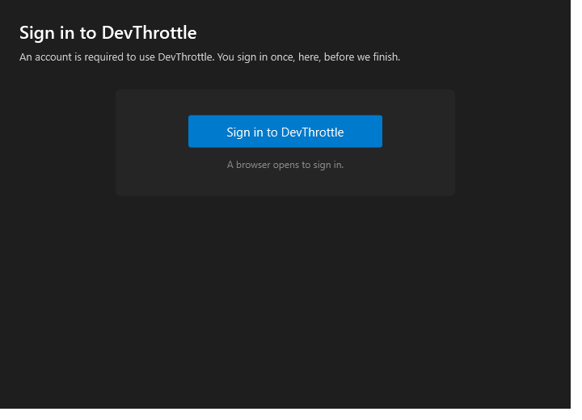
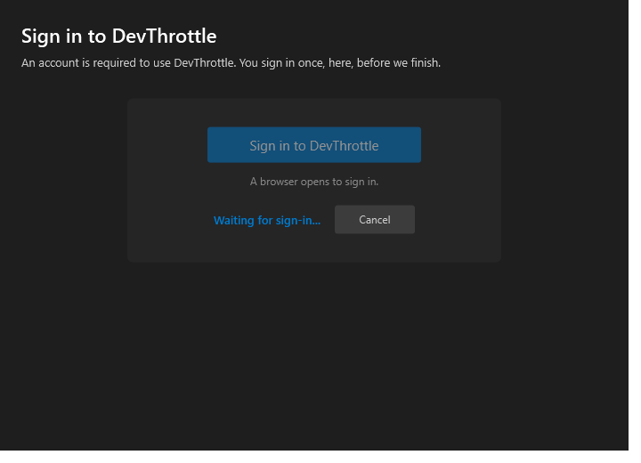
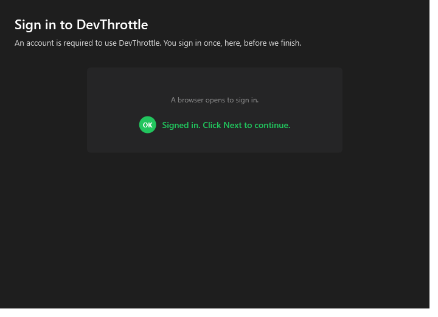

[Installer] Forced Sign-in step after Checks (one button, browser loopback)
Pull request #666 · branch issue-657-installer-signin-step · base main
VERIFIED - all five acceptance criteria met. Outcome: PASS.
Independent verification by the QA Agent. The change was built and run from a fresh checkout of
the pull request branch in an isolated git worktree; the QA Agent produced its own proof and did not reuse
the Developer Agent's binaries or screenshots. The behavioural outcomes were exercised end to end against the
local development sign-in stand-in (tools/devthrottle-dev-signin), because the real production
sign-in page is not yet live (backend devthrottle_internal#46). Production cannot be exercised here; where
that is the case, Expected versus Actual is stated against the stand-in, which performs the exact same
loopback hand-back contract the real backend will.
tools/cc-director-setup.Tests): 5/5 pass against a real
LoopbackLoginListener - signed-in, cancelled, timed-out, browser-cannot-open, and the result helper.SignInRunner + real
LoopbackLoginListener driven against the running dev stand-in on http://127.0.0.1:8771
- proved the sign-in URL shape, the browser hand-back, and the SignedIn / TimedOut / Cancelled outcomes.SignInStep production control rendered
with the installer's App resources, clicked, and driven to completion against the stand-in; the wizard gate
value SignInStep.IsSignedIn (which MainWindow uses for NextButton.IsEnabled)
was asserted False before and True after. Screenshots below.| # | Criterion | Expected | Actual (QA-observed) | Verdict |
|---|---|---|---|---|
| 1 | After Checks, a Sign-in step shows a single "Sign in to DevThrottle" button; Next disabled until sign-in completes. | Step ordering Welcome -> Prerequisites (Checks) -> Sign in; one button; Next off until signed in. | Sign-in is step 3, immediately after the Prerequisites/Checks step 2 (MainWindow step map).
The rendered step shows exactly one "Sign in to DevThrottle" button (screenshot 01). The QA harness observed
IsSignedIn = False before sign-in, and MainWindow sets
NextButton.IsEnabled = _signInStep?.IsSignedIn == true, so Next is disabled. No skip control exists. |
PASS |
| 2 | Clicking opens the system browser at <signin-url>?redirect_uri=<loopback>; completing sign-in (stand-in) captures the hand-back and enables Next. |
URL = signin base + a loopback redirect_uri; completing returns SignedIn and enables Next. |
The runner built
http://127.0.0.1:8771/signin?redirect_uri=http%3A%2F%2F127.0.0.1%3A55612%2Fdevthrottle-login-callback%2F
(loopback redirect_uri). The stand-in served the page (200), a provider completion redirected (302) carrying the
credential back to the loopback callback, the listener captured it (200), the runner returned SignedIn,
and IsSignedIn flipped to True with SignInCompleted raised - the exact signal that enables
Next (screenshot 02). Expected against production: identical call shape; the real page replaces the stand-in. |
PASS |
| 3 | Cancel returns to a retryable state with a clear message; an abandoned sign-in times out and is retryable (no hang, no crash). | Cancel -> Cancelled (retryable); no hand-back within timeout -> TimedOut (retryable); process stable. | Cancel produced Cancelled with message "Sign-in was cancelled. Click 'Sign in to DevThrottle' to try again."
and re-enabled the button. An abandoned sign-in produced TimedOut with "Sign-in timed out ... please try again."
The waiting state shows a Cancel action (screenshot 01b). No hang or crash; the harness exited cleanly. |
PASS |
| 4 | The wizard cannot proceed to Install without a completed sign-in. | Install unreachable while not signed in. | Install is step 5, reachable only by Next from step 4, reachable only by Next from the Sign-in step 3, whose Next is
gated on IsSignedIn. NextButton_Click has no bypass. With IsSignedIn = False,
Next is disabled, so Install cannot be reached. |
PASS |
| 5 | The access token is never written to the installer log. | No access_token / refresh_token / JWT value anywhere in the setup log. |
A full scan of the QA run's own setup log found no token value. The log records the sign-in URL (call shape) and
"credential captured from the browser hand-back" only. SignInRunner and LoopbackLoginListener
never log the token, and the runner does not return or persist it (persistence is the separate issue #658).
See qa/qa-installer-log-no-token.txt. |
PASS |
01 - Sign-in step, single button, Next disabled (IsSignedIn = False):

01b - Waiting state with a Cancel action (retryable busy state):

02 - Signed in via the stand-in; success banner, Next would enable (IsSignedIn = True):

tools/cc-director-setup), its engine, CcDirector.Core, and the test project
all build clean (0 warnings, 0 errors) from the pull request branch.VERIFIED - all five acceptance criteria met. Outcome: PASS.